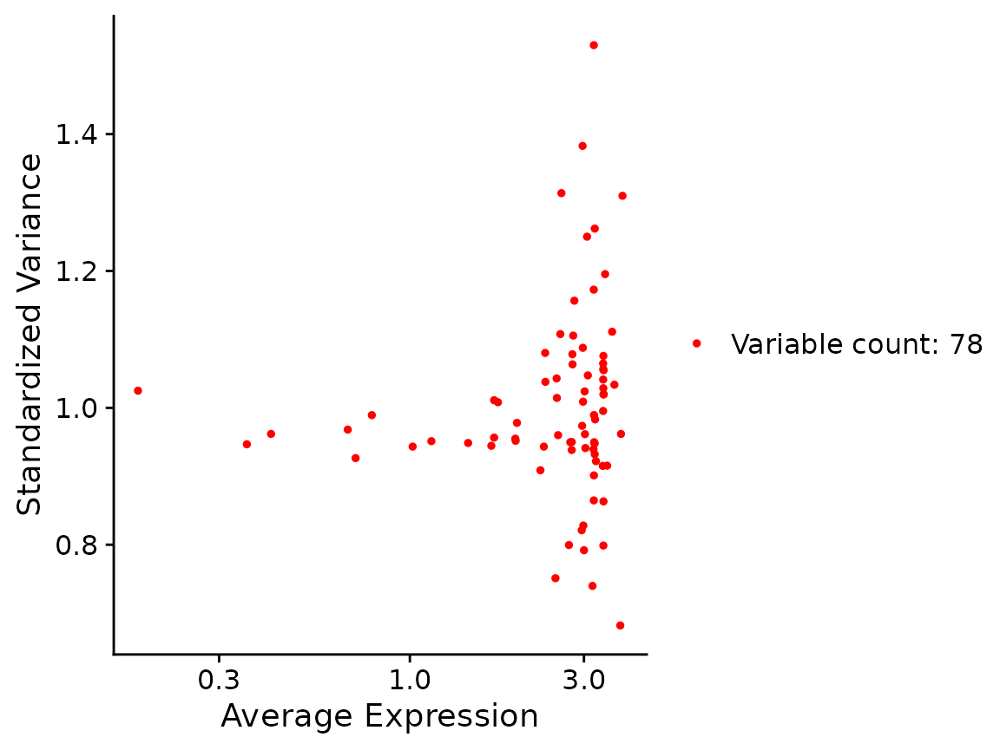

Run Canek on Seurat objects
seurat.RmdCreate Seurat object
x <- lapply(names(SimBatches$batches), function(batch) {
CreateSeuratObject(SimBatches$batches[[batch]], project = batch)
})
x <- merge(x[[1]], x[[2]])
x[["cell_type"]] <- SimBatches$cell_types
x
#> An object of class Seurat
#> 500 features across 1579 samples within 1 assay
#> Active assay: RNA (500 features, 0 variable features)
table(x$orig.ident)
#>
#> B1 B2
#> 631 948
x <- NormalizeData(x)
x <- FindVariableFeatures(x, selection.method = "mean.var.plot")
VariableFeaturePlot(x)
x <- ScaleData(x)
#> Centering and scaling data matrix
x <- RunPCA(x)
#> Warning in irlba(A = t(x = object), nv = npcs, ...): You're computing too large
#> a percentage of total singular values, use a standard svd instead.
#> PC_ 1
#> Positive: Gene65, Gene410, Gene373, Gene449, Gene323, Gene473, Gene61, Gene250, Gene50, Gene89
#> Gene378, Gene342, Gene469, Gene24, Gene207, Gene213, Gene54, Gene471, Gene224, Gene64
#> Gene4, Gene348, Gene432, Gene375, Gene94, Gene422, Gene439, Gene396, Gene78, Gene487
#> Negative: Gene461, Gene341, Gene492, Gene183, Gene136, Gene31, Gene366, Gene311, Gene5, Gene140
#> Gene460, Gene438, Gene162, Gene187, Gene211, Gene370, Gene401, Gene172, Gene147, Gene474
#> Gene326, Gene223, Gene74, Gene354, Gene220, Gene361, Gene304, Gene77, Gene322, Gene359
#> PC_ 2
#> Positive: Gene322, Gene31, Gene223, Gene211, Gene64, Gene373, Gene341, Gene410, Gene449, Gene323
#> Gene224, Gene220, Gene327, Gene361, Gene461, Gene207, Gene61, Gene89, Gene209, Gene183
#> Gene375, Gene487, Gene75, Gene354, Gene378, Gene451, Gene348, Gene471, Gene77, Gene460
#> Negative: Gene4, Gene366, Gene74, Gene213, Gene136, Gene65, Gene473, Gene94, Gene492, Gene5
#> Gene78, Gene14, Gene311, Gene326, Gene432, Gene422, Gene438, Gene401, Gene497, Gene328
#> Gene474, Gene250, Gene381, Gene147, Gene141, Gene342, Gene54, Gene172, Gene239, Gene162
#> PC_ 3
#> Positive: Gene311, Gene239, Gene471, Gene322, Gene492, Gene410, Gene323, Gene65, Gene378, Gene354
#> Gene5, Gene469, Gene250, Gene183, Gene136, Gene207, Gene438, Gene348, Gene461, Gene453
#> Gene439, Gene366, Gene64, Gene31, Gene140, Gene75, Gene22, Gene432, Gene141, Gene24
#> Negative: Gene327, Gene94, Gene224, Gene223, Gene77, Gene449, Gene74, Gene341, Gene220, Gene162
#> Gene473, Gene209, Gene326, Gene304, Gene261, Gene89, Gene474, Gene342, Gene187, Gene460
#> Gene50, Gene18, Gene4, Gene396, Gene61, Gene213, Gene147, Gene361, Gene422, Gene381
#> PC_ 4
#> Positive: Gene183, Gene401, Gene224, Gene471, Gene327, Gene361, Gene311, Gene50, Gene373, Gene65
#> Gene378, Gene422, Gene4, Gene322, Gene223, Gene74, Gene487, Gene207, Gene220, Gene213
#> Gene497, Gene375, Gene18, Gene78, Gene453, Gene243, Gene410, Gene304, Gene473, Gene492
#> Negative: Gene61, Gene449, Gene261, Gene239, Gene461, Gene162, Gene209, Gene141, Gene342, Gene195
#> Gene5, Gene439, Gene31, Gene250, Gene24, Gene136, Gene54, Gene94, Gene64, Gene298
#> Gene22, Gene323, Gene14, Gene147, Gene366, Gene381, Gene211, Gene474, Gene140, Gene359
#> PC_ 5
#> Positive: Gene94, Gene207, Gene449, Gene461, Gene75, Gene4, Gene410, Gene304, Gene261, Gene65
#> Gene354, Gene327, Gene366, Gene136, Gene54, Gene492, Gene473, Gene74, Gene18, Gene31
#> Gene341, Gene323, Gene348, Gene239, Gene223, Gene311, Gene213, Gene172, Gene224, Gene61
#> Negative: Gene422, Gene195, Gene89, Gene209, Gene250, Gene432, Gene22, Gene342, Gene147, Gene396
#> Gene359, Gene140, Gene78, Gene453, Gene220, Gene243, Gene14, Gene474, Gene326, Gene50
#> Gene322, Gene439, Gene77, Gene425, Gene298, Gene183, Gene24, Gene438, Gene162, Gene361
Run Canek
We pass the column containing the batch information.
x <- RunCanek(x, "orig.ident")
#> Warning in (function (A, nv = 5, nu = nv, maxit = 1000, work = nv + 7, reorth =
#> TRUE, : You're computing too large a percentage of total singular values, use a
#> standard svd instead.
x <- ScaleData(x)
#> Centering and scaling data matrix
x <- FindVariableFeatures(x, nfeatures = 500)
VariableFeaturePlot(x)
x <- RunPCA(x)
#> Warning in irlba(A = t(x = object), nv = npcs, ...): You're computing too large
#> a percentage of total singular values, use a standard svd instead.
#> PC_ 1
#> Positive: Gene31, Gene461, Gene322, Gene341, Gene211, Gene223, Gene64, Gene183, Gene361, Gene311
#> Gene354, Gene220, Gene140, Gene207, Gene239, Gene410, Gene492, Gene323, Gene370, Gene460
#> Gene451, Gene187, Gene438, Gene471, Gene75, Gene487, Gene209, Gene195, Gene453, Gene298
#> Negative: Gene4, Gene65, Gene473, Gene74, Gene213, Gene94, Gene366, Gene50, Gene78, Gene342
#> Gene250, Gene422, Gene14, Gene432, Gene327, Gene89, Gene54, Gene326, Gene497, Gene449
#> Gene136, Gene396, Gene328, Gene224, Gene381, Gene474, Gene469, Gene373, Gene261, Gene141
#> PC_ 2
#> Positive: Gene492, Gene311, Gene366, Gene136, Gene461, Gene5, Gene239, Gene438, Gene471, Gene183
#> Gene140, Gene354, Gene401, Gene195, Gene4, Gene370, Gene147, Gene453, Gene65, Gene78
#> Gene328, Gene172, Gene74, Gene497, Gene22, Gene359, Gene14, Gene213, Gene298, Gene432
#> Negative: Gene327, Gene373, Gene449, Gene224, Gene223, Gene89, Gene61, Gene220, Gene50, Gene410
#> Gene64, Gene211, Gene94, Gene341, Gene473, Gene209, Gene342, Gene77, Gene361, Gene322
#> Gene375, Gene31, Gene323, Gene304, Gene261, Gene396, Gene207, Gene422, Gene18, Gene54
#> PC_ 3
#> Positive: Gene61, Gene449, Gene261, Gene461, Gene162, Gene209, Gene342, Gene239, Gene141, Gene94
#> Gene195, Gene24, Gene5, Gene439, Gene250, Gene136, Gene147, Gene298, Gene31, Gene77
#> Gene14, Gene474, Gene54, Gene89, Gene341, Gene425, Gene359, Gene22, Gene64, Gene366
#> Negative: Gene183, Gene401, Gene471, Gene224, Gene361, Gene327, Gene311, Gene322, Gene65, Gene373
#> Gene378, Gene410, Gene50, Gene422, Gene207, Gene487, Gene4, Gene492, Gene223, Gene453
#> Gene74, Gene370, Gene375, Gene497, Gene220, Gene18, Gene78, Gene213, Gene354, Gene243
#> PC_ 4
#> Positive: Gene422, Gene195, Gene147, Gene89, Gene209, Gene250, Gene359, Gene22, Gene432, Gene342
#> Gene396, Gene78, Gene140, Gene243, Gene453, Gene220, Gene77, Gene50, Gene326, Gene425
#> Gene474, Gene14, Gene439, Gene322, Gene298, Gene438, Gene24, Gene183, Gene162, Gene460
#> Negative: Gene410, Gene449, Gene94, Gene65, Gene207, Gene461, Gene366, Gene4, Gene304, Gene75
#> Gene261, Gene136, Gene327, Gene354, Gene54, Gene74, Gene492, Gene18, Gene473, Gene323
#> Gene341, Gene31, Gene311, Gene348, Gene172, Gene213, Gene239, Gene61, Gene451, Gene64
#> PC_ 5
#> Positive: Gene224, Gene94, Gene425, Gene187, Gene451, Gene147, Gene497, Gene396, Gene326, Gene24
#> Gene328, Gene487, Gene77, Gene162, Gene438, Gene378, Gene223, Gene75, Gene213, Gene473
#> Gene243, Gene460, Gene298, Gene401, Gene14, Gene31, Gene469, Gene359, Gene381, Gene461
#> Negative: Gene250, Gene89, Gene322, Gene22, Gene354, Gene140, Gene183, Gene432, Gene439, Gene65
#> Gene449, Gene61, Gene54, Gene78, Gene74, Gene373, Gene195, Gene366, Gene4, Gene64
#> Gene342, Gene410, Gene327, Gene18, Gene261, Gene5, Gene207, Gene474, Gene375, Gene239